Наши услуги
SportPark объединяет девять направлений под одной крышей — от бассейна до персонального тренинга. Выберите то, что подходит именно вам.
Бассейн
Плавание является наиболее эффективным видом спорта с точки зрения соотношения приложенных усилий и сожженных калорий и является отличным вариантом быть в движении в любое время года. Это занятие имеет множество преимуществ, от физических до умственных и социальных.
Плавательный бассейн Клуба SportPark имеет 25 м в длину и 9,5 м в ширину и 4 дорожки. Глубина варьирует от 1,6 м до 1,8 м. Бассейн оборудован системами водяного отопления, поддерживая оптимальную температуру 28-29°C, а дезинфекция воды осуществляется путем электролиза соли (без добавления хлора).
Бассейн имеет зону отдыха с шезлонгами и Wi-Fi зоной. В распоряжении желающих побаловать себя турецкая баня (хаммам), русская сауна, джакузи, массажный кабинет. Бассейн находится в вашем распоряжении, как для развлечения, так и для индивидуальных или групповых уроков плавания для взрослых и детей.
Плавание подходит для людей всех возрастов, которые хотят выразить свою потребность в движении через плавание и цель которых поддержать оптимальную физическую форму. Успех в плавании возникает тогда, когда мотивация становится привычкой, и личный инструктор может помочь вам преодолеть трудные моменты и отсутствие мотивации на вашем пути к достижению цели. Наши тренеры готовы помочь вам в зависимости от пожеланий, потребностей и вашего свободного времени.
Плавание для детей является хорошим способом физического восстановления и является более эффективным, чем другие виды «земной» деятельности, точнее в 12 раз. Плавание стимулирует нервную систему, увеличивает активность мозга и умственные способности, развивает эластичность плеч, позвоночника, бедра и колен. Рекомендуется для укрепления иммунной системы, стимулирования рефлексов, повышения выносливости, другими словами, у вас вырастет здоровый крепыш.
Плавание не только здоровый вид спорта и полезный способ отдохнуть, но и безопасный, поскольку шансы получить травму минимальны!
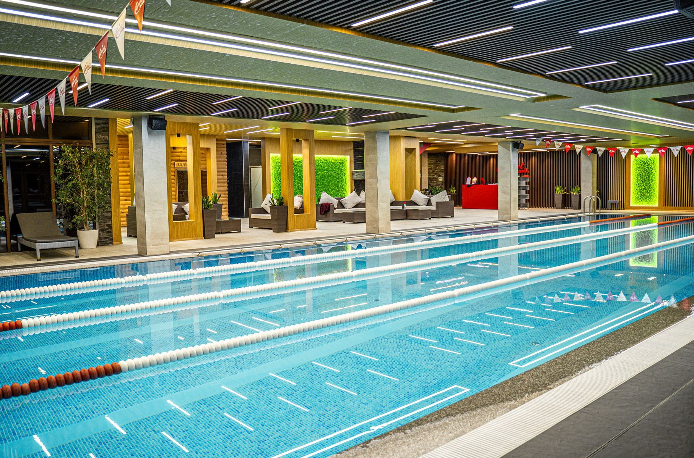
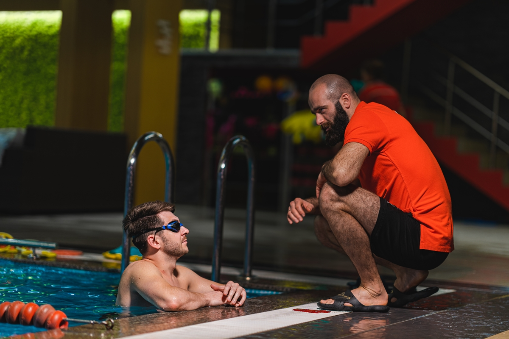
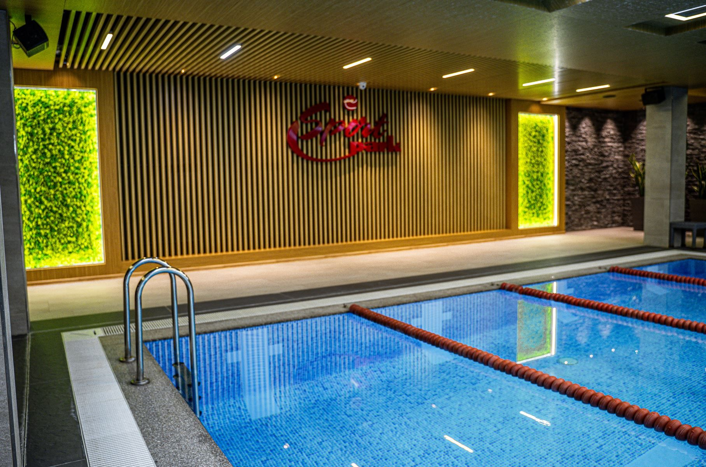
Фитнес
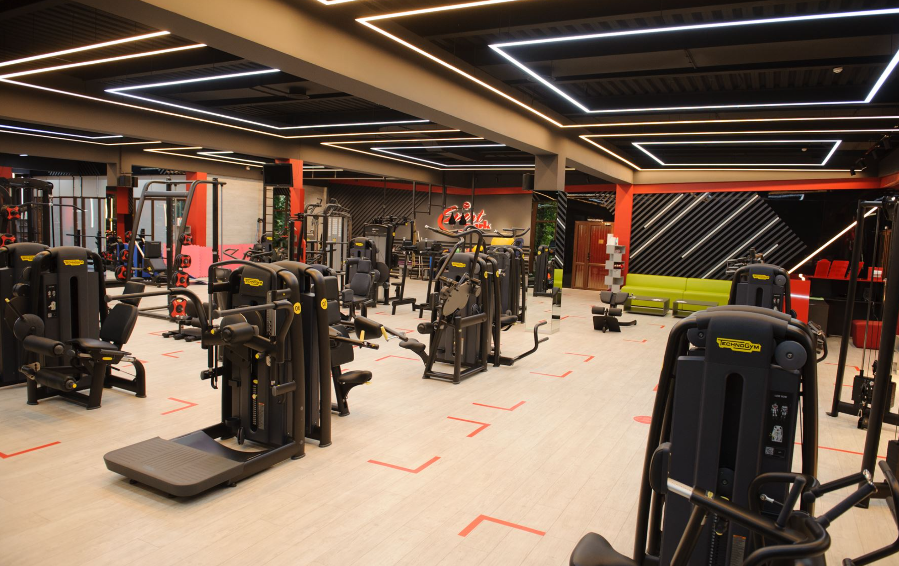
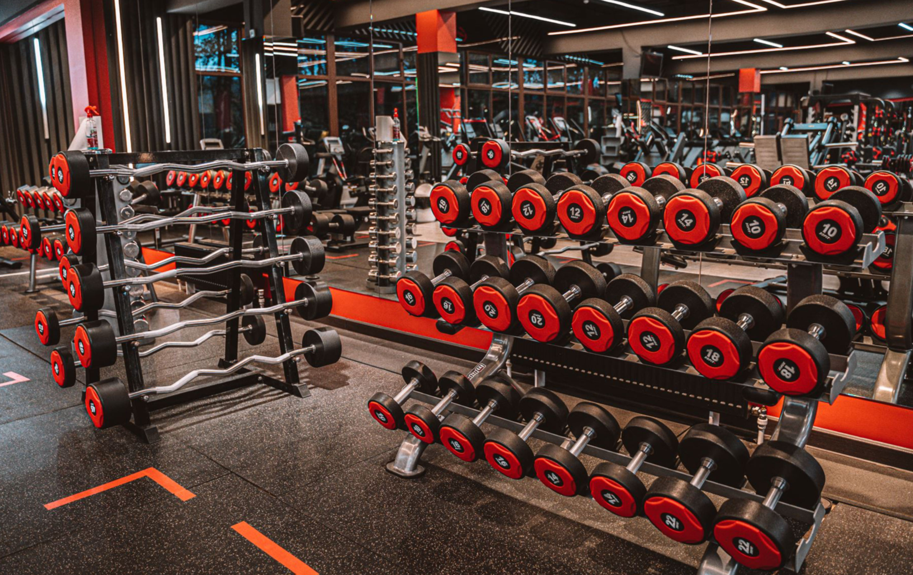
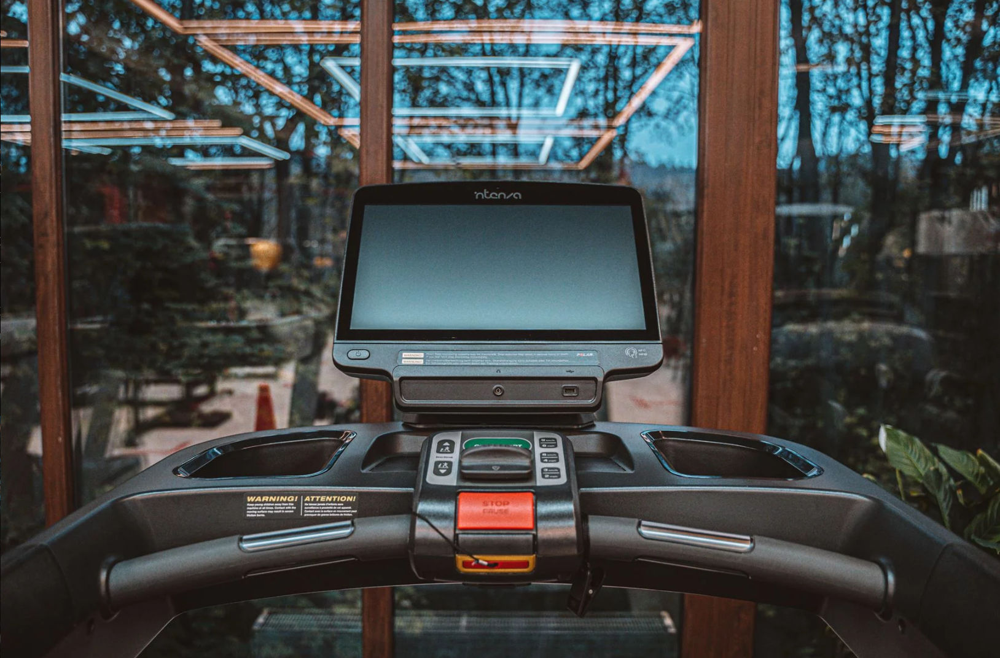
Спорт определяет способность вашего тела функционировать эффективно, как в профессиональной жизни, так и в рекреационных мероприятиях. Уважение, которое мы проявляем к своему телу, отражается на нашей внешности, а также на нашем здоровье и настроении. Фитнес идеальный способ улучшить внешний вид и поухаживать за здоровьем организма, он особенно полезен для здоровья и красоты, а также для хорошей работы мозга и сохранения молодости. Хорошая фитнес-тренировка и правильное питание быстро отразятся на вашей фигуре, поэтому не медлите быть в гармонии со своим телом и почувствовать себя хорошо в собственном теле.
Где взять необходимую энергию, чтобы насытить тело и психику? Ответ очень прост! Если вы думали, что спорт это занятие, которое не имеет места в вашей программе, то вероятно вы не слышали о преимуществах тренировки в фирнес-зале.
Фитнес представляет собой тренировку, которая укрепляет и развивает мышечную систему, повышая тонус, выносливость мышц и укрепляя костную систему, сухожилия и связки.
Фитнес-зал Клуба SportPark оснащен самыми передовыми и современными тренажерами для высокоэффективных тренировок, о которых мечтает любой энтузиаст. После того, как вы войдете в фитнес-зал, вы откроете для себя огромное количество возможностей проработать каждую группу мышц в отдельности, используя специализированные и многофункциональные тренажеры.
В сочетании со здоровой пищей, отдыхом и программой по снижению стресса, тренировка оказывает существенное влияние на состояние здоровья на длительный срок. Это является самым важным, о чем вы должны помнить при выборе здорового образа жизни!
Стремись достичь лучшей физической формы, приди на тренировку SportPark!
Кроссфит
Crossfit это более новый тренд в фитнесе, набирающий все большие масштабы. Это всегда разнообразные тренировки, которые сочетают в себе функциональные упражнения из гимнастики, легкой атлетики, тяжелой атлетики и изометрии, заставляющие работать все тело при высокой интенсивности, постепенно создавая прочную базу, которая позволяет обеспечить безопасный и быстрый прогресс. Crossfit изнурителен и интенсивен, и направлен на тех, кто заинтересован в силовых и кардио-тенировках для улучшения внешнего вида, физической подготовленности и здоровья.
Тренировки могут выполняться всеми – от самых юных до взрослых, от начинающих до продвинутых – следуя инструкциям тренеров изменить используемые веса или применить различные оснащения, чтобы облегчить или усложнить упражнения. Тренер оценит степень физической подготовки, а веса и интенсивность тренировки будут подобраны в зависимости от этого аспекта.
КроссФит упражнения включают бег, прыжки или лазание по канату, подъемы и перемещения больших объектов, в том числе на большие расстояния, упражнения из пауэрлифтинга и применение Олимпийских методов тяжелой атлетики. Часть тренировки включает использование свободных весов, гимнастических колец, турников и большое разнообразие других упражнений с собственным весом.
Хотите ли вы попробовать в первый раз или уже занимаетесь Crossfit–ом в качестве увлечения или на профессиональном уровне, мы приглашаем Вас познакомиться с нами лучше и узнать больше о Crossfit от SportPark.
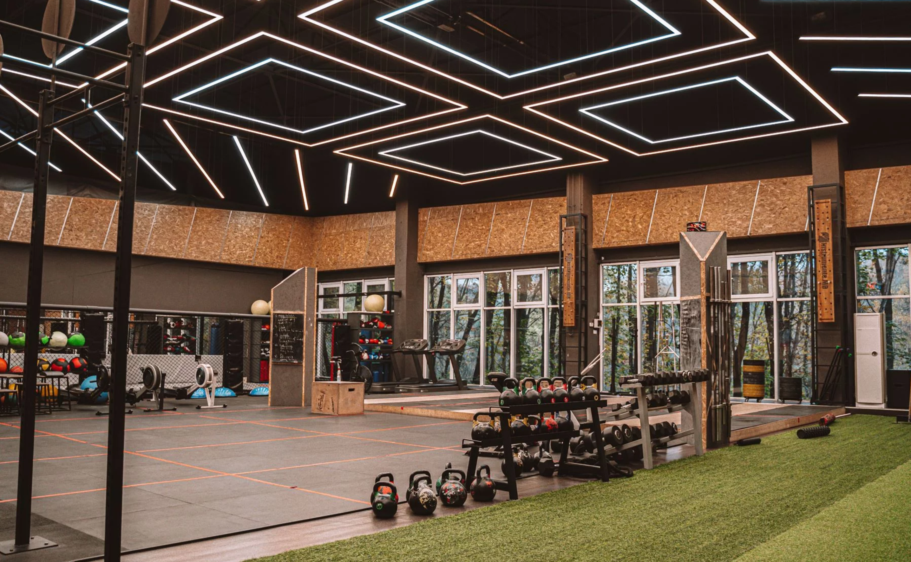
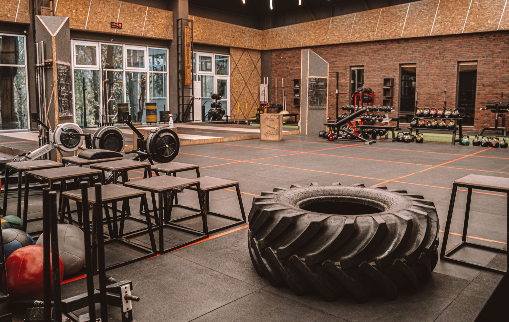
Настольный теннис
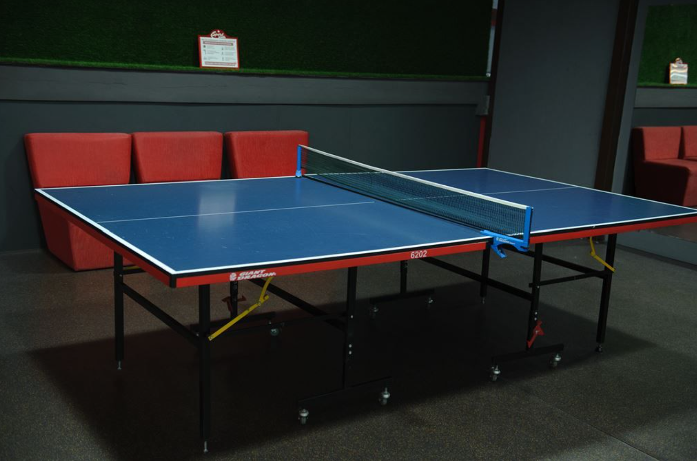
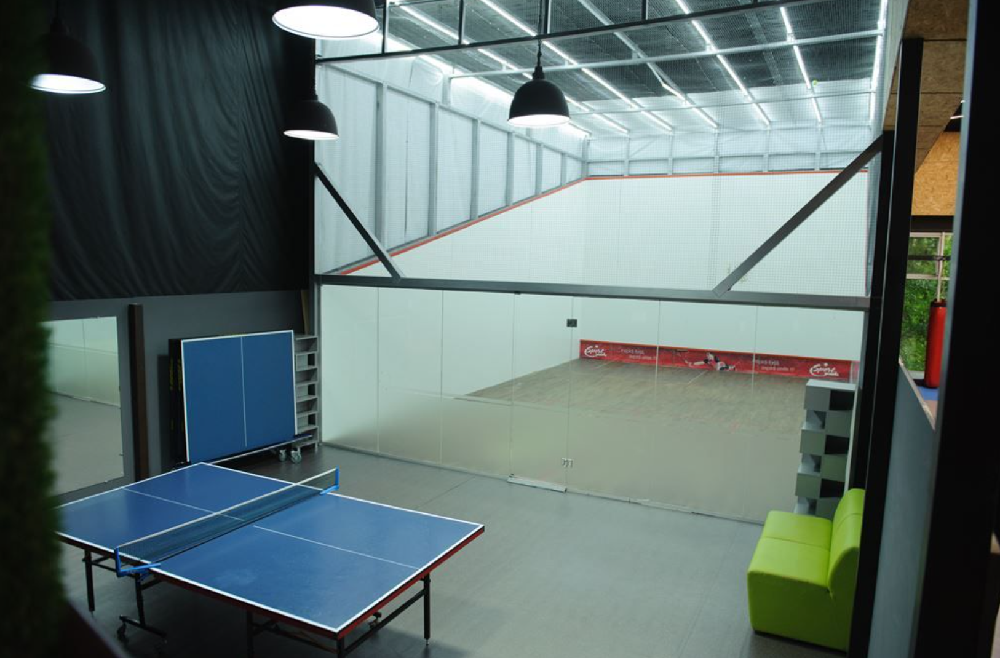
Независимо от того, выбираете ли вы его просто ради нового вида спорта, потому что играть легко и весело, или вы уже опытный игрок и хотите одержать новую победу, настольный теннис - это полноценный вид спорта, который удовлетворяет все желания и потребности любителей спорта. Звук удара мяча о стол, ощущение отскока снаряда от лопасти, удовлетворение от хорошо поставленного удара, вращение лопасти во время первого вращения, сила удара или просто удовольствие от продолжительного обмена мячами - настольный теннис это спорт, основанный на инстинктах, концентрации и обмене эмоциями.
Настольный теннис - это индивидуальный вид спорта, но дух клуба создает чувство принадлежности к сообществу, к семье. Интенсивный или спокойный? Вопреки общему представлению о нем, это очень физический вид спорта, если играть на хорошем уровне: повторяющиеся быстрые и динамичные движения нагружают икры и бедра.
Все клиенты Sport Park могут играть в настольный теннис БЕСПЛАТНО.
Сквош
Сквош — это современный и интенсивный вид спорта, который проводится исключительно в помещении, в специально оборудованном зале. Игра ведётся с использованием специальных ракеток и мячей, при этом мяч отбивается о фронтальную стену в чётко ограниченном пространстве — идеально для быстрой и динамичной игры.
Сквош идеально сочетает в себе преимущества кардиотренировки, ловкости и мышечной силы. Подходит для всех возрастов и уровней подготовки. Все активные члены клуба SportPark получают бесплатный доступ к сквош-залу при предварительной записи на рецепции клуба.
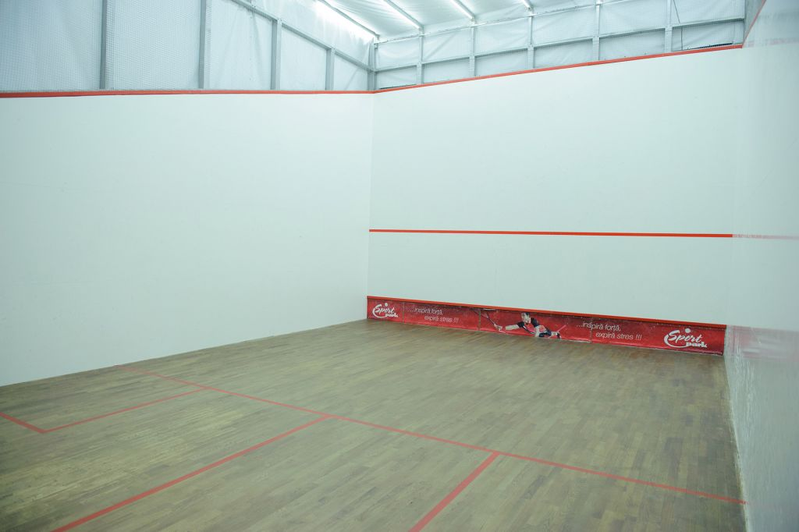
Пилатес
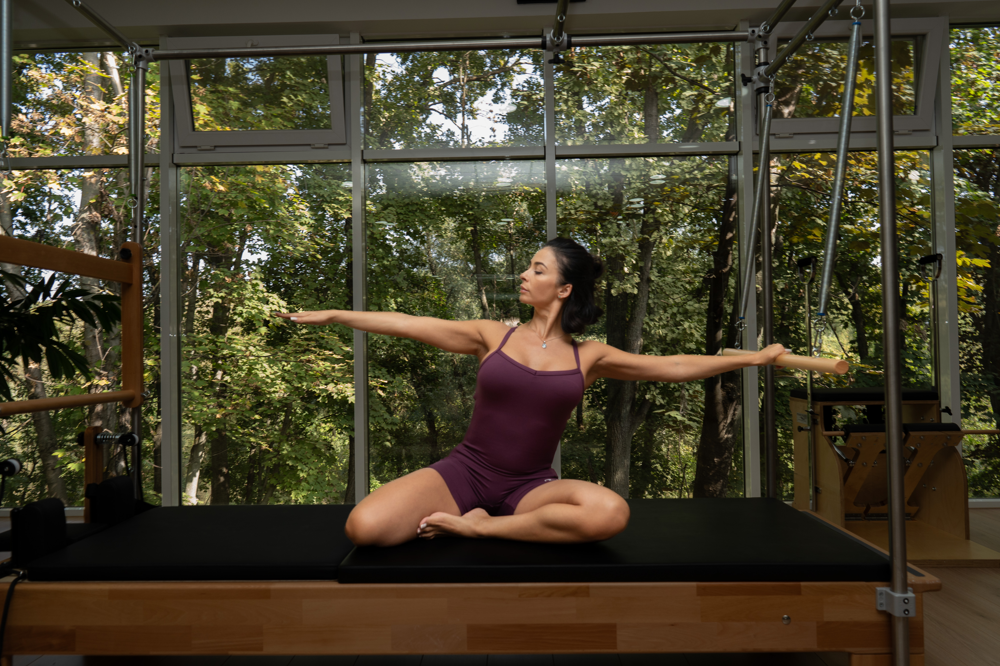
STUDIO PILATES оснащена самым современным и эффективным оборудованием для пилатеса. PILATES - полная система физических упражнений, которая прорабатывает все тело, от глубоких до периферийных мышц, используя тело, разум и дыхание.
Наш инструктор адаптируется к потребностям клиентов, координирует и обеспечивает поддержку при каждом движении и упражнении, что способствует реабилитации людей с проблемами здоровья и улучшает качество их жизни.
Преимущества PILATES: коррекция осанки, повышенная мобильность, сжигать в среднем 286 калорий в час для начинающего уровня, тонизирование организма, увеличить силу и тонус мышц, облегчение боли и снижение напряжения в позвоночнике, улучшение кровообращения, улучшать дыхание, балансировка центра тяжести, улучшение подвижности суставов, увеличить силу концентрации, расслабление ума, укрепление иммунной системы, снижение стресса, депрессии, тревожности.
Массаж
После интенсивной тренировки или напряжённого дня ничто не сравнится с хорошим массажем. В SportPark массаж доступен в качестве дополнительной услуги для всех клиентов, которые стремятся к глубокому расслаблению, восстановлению мышц или тонизации тела. Массаж проводится в специально оборудованном, комфортном и гигиеничном пространстве профессиональными терапевтами.
Полноценный опыт расслабления и восстановления. Этот вид массажа охватывает всё тело, стимулирует кровообращение, снимает мышечное напряжение и возвращает ощущение гармонии. Идеально подходит для: общего расслабления, восстановления после тренировки, улучшения сна.
Локальный массаж, направленный на проработку напряженных зон (спина, плечи, шея и др.). Отличный выбор для снятия накопившегося напряжения и быстрой перезагрузки тела. Идеально подходит для: активных людей, болей в спине и локального мышечного напряжения.
Интенсивный, тонизирующий массаж, направленный на стимуляцию кровообращения и улучшение внешнего вида кожи. Идеально подходит для: борьбы с целлюлитом, лимфодренажа и моделирования силуэта.
Массаж — идеальное дополнение к твоему активному образу жизни в SportPark.
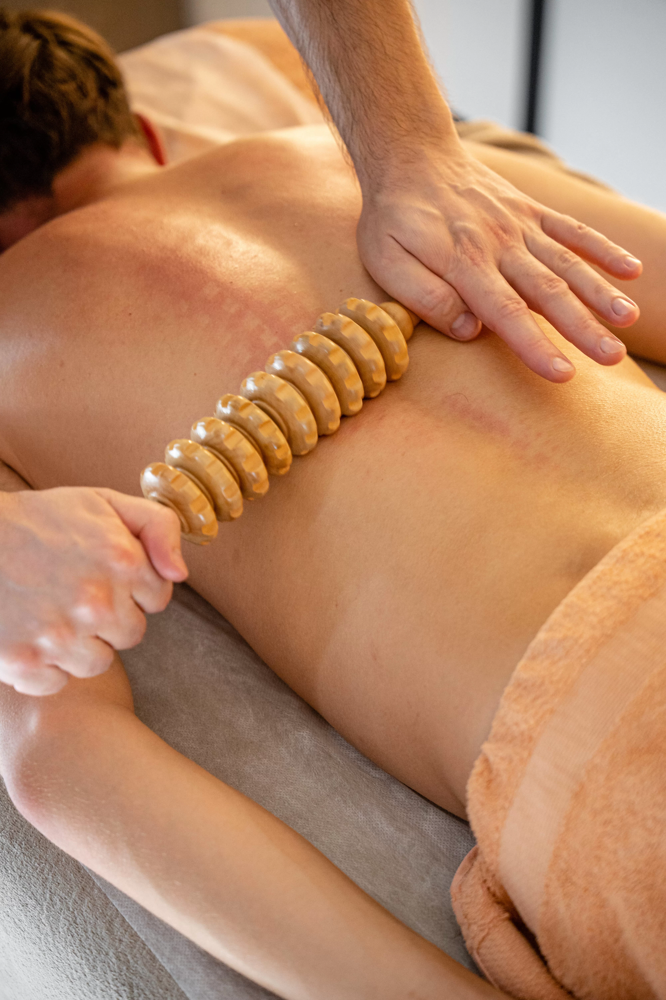
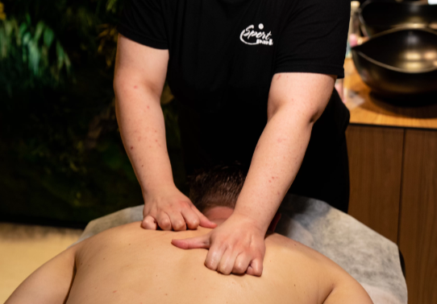
Спа-зона
SPA ZONE в спорт клубе SportPark - это оазис релаксации и оздоровления, предлагающий широкий спектр удобств, направленных на улучшение благополучия посетителей. Ниже предоставлено подробное описание каждой зоны.
* - Платные услуги.
1. Джакузи - это ванны с горячей водой, которые обеспечивают нежный массаж для всего тела, помогая расслабить мышцы и улучшить кровообращение. Преимущества: Глубокое расслабление, снятие стресса и мышечного напряжения, стимуляция кровообращения. Противопоказания: Не рекомендуется для людей с сердечными или серьезными кровеносными проблемами.
2. Русская баня из натурального дуба с гималайской соляной панелью: - Русская баня - это помещение с влажным воздухом, стены которого покрыты солью, которая помогает очищать воздух и улучшать дыхание. Преимущества: Очищение организма от токсинов, улучшение дыхательной функции, расслабление мышц и суставов. Противопоказания: Людям с респираторными или сердечно-сосудистыми заболеваниями следует избегать посещения русской бани.
3. Хамам (паровая комната): - это традиционная паровая баня, которая предлагает глубокий релакс и очищение кожи. Преимущества: Расширение пор кожи, удаление токсинов, увлажнение и оживление кожи. Противопоказания: Людям с проблемами дыхания или сердечно-сосудистой системы следует избегать длительного воздействия пара.
4. Кнейпский бассейн: - это комбинация горячей и холодной ванны, которая включает быструю смену температур, стимулируя кровообращение. Преимущества: Стимуляция иммунной системы, улучшение кровообращения, тонизация кожи. Противопоказания: Не рекомендуется для людей с сердечными или серьезными кровеносными проблемами.
5. Ледяной фонтан: - это устройство, поставляющее измельченный лед, используемый для охлаждения тела после посещения саун или парных. Преимущества: Оживление, тонизирование и укрепление кожи, регулирование температуры тела. Противопоказания: Не существует специфических противопоказаний, но следует избегать длительного воздействия низких температур.
6. Шезлонг с подогревом: - предназначен для комфортного релакса с поддержанием температуры тела. Преимущества: Глубокая релаксация, комфорт и оживление. Противопоказания: Нет специфических противопоказаний, но следует избегать длительного воздействия высоких температур.
7. Турецкий хаммам с массажем пены* : - это паровая баня, сочетающая в себе массаж пены и отшелушивание кожи, длительность сеанса варьируется от 50 до 80 минут. Преимущества: Очищение кожи, удаление мертвых клеток, релаксация и оживление тела и ума. Противопоказания: Людям с чувствительной кожей или открытыми ранами следует избегать длительного воздействия пара и энергичного массажа.
8. Фитосауна* : - Фитосауна - это традиционная сауна, использующая ароматические растения и эфирные масла для дополнительных польз для здоровья, рекомендуемая длительность сеанса варьируется от 10 до 20 минут. Преимущества: Улучшение дыхания, детоксикация организма, снижение воспаления и расслабление мышц. Противопоказания: Люди с аллергией на определенные растения или эфирные масла должны избегать использования фитосауны. Эти удобства в зоне СПА предлагают полный опыт релаксации и оживления, способствуя улучшению здоровья и благополучия.
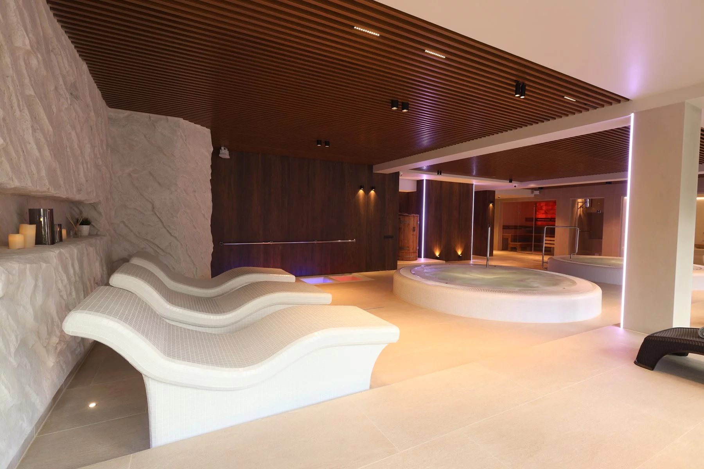
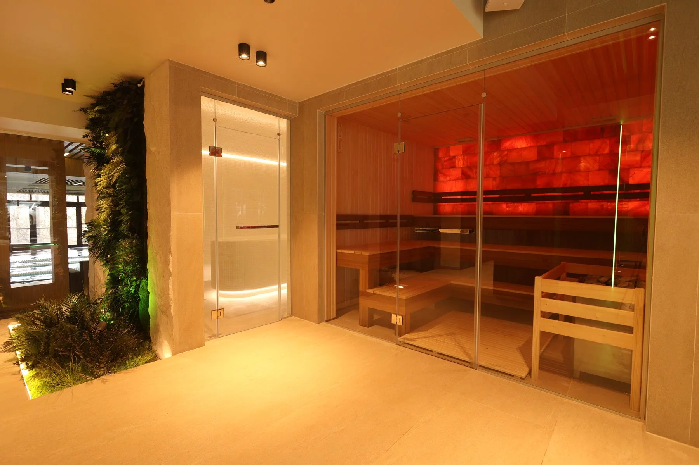
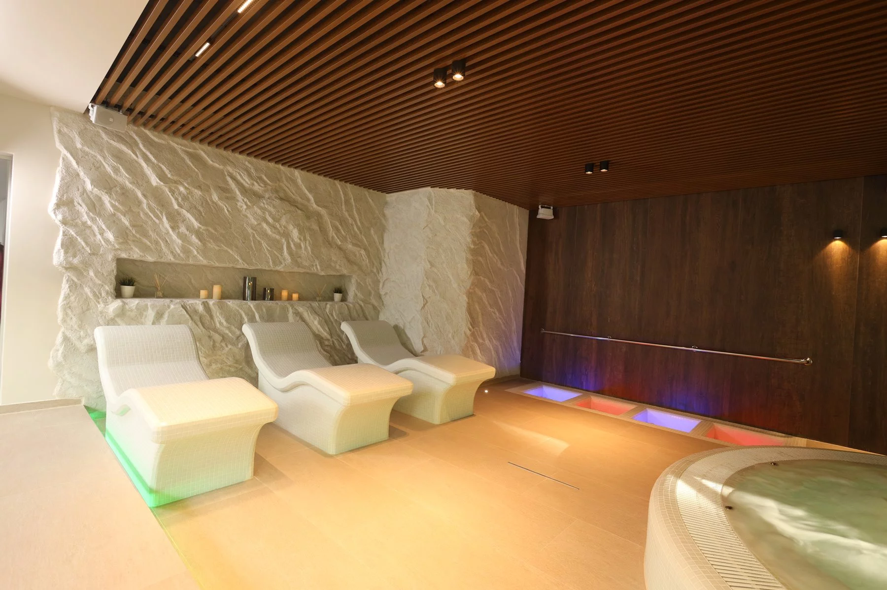
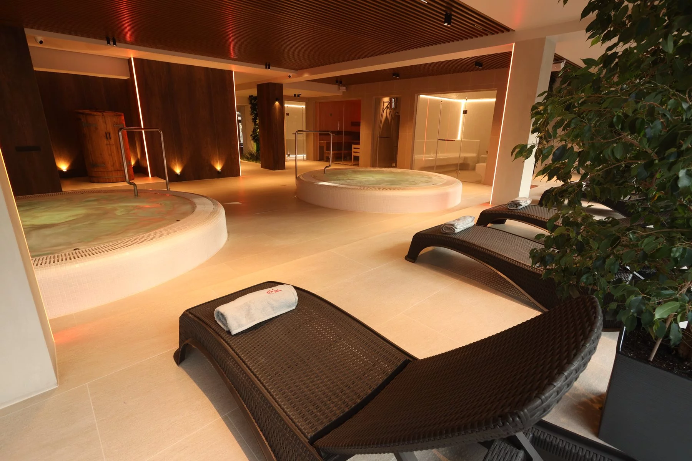
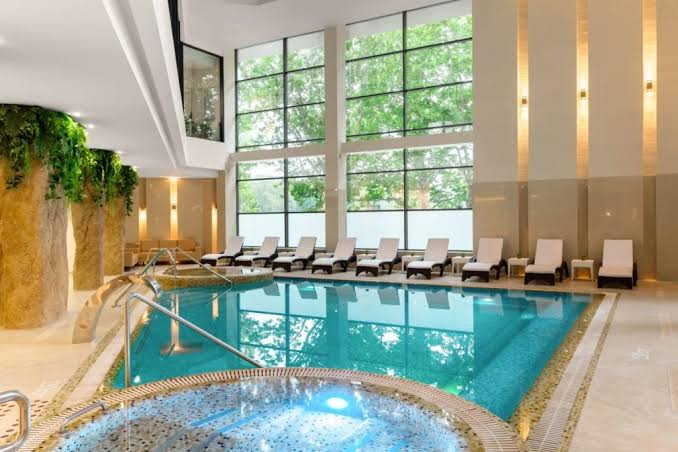
Групповые программы
TRX — интервальная кардио тренировка с использованием петель TRX, чередуя низкоинтенсивные и высокоинтенсивные интервалы. Вызывая метаболический отклик, действующий̆ не только на протяжении тренировки, но и после ее окончания, интервальная тренировка способствует эффективному.
CROSSFIT — интервальная кардио тренировка с использованием петель TRX, чередуя низкоинтенсивные и высокоинтенсивные интервалы. Вызывая метаболический отклик, действующий̆ не только на протяжении тренировки, но и после ее окончания, интервальная тренировка способствует эффективному.
CROSSFIT BEGINNER — представляет собой функциональные движения с постоянной вариацией, выполняемые с повышенной интенсивностью. Сама тренировка сочетает в себе упражнения с использованием дополнительного оборудования (штанги, гантелей, гири), упражнения с весом собственного тела, а также циклические движения (бег, гребля).
FITBALL — занятие с мячом, которое эффективно укрепляет все тело, развивает координацию и тренирует вестибулярный аппарат.
STEP — одно из самых популярных направлений в фитнесе, в виде несложных комбинаций из базовых шагов step-аэробики. В результате чего затрачивается большое количество калории, что способствует снижению веса.
TOTAL BODY FIT — помогает проработать рельеф всего тела, а за счет интенсивности и работы в трех пульсовых зонах: жиросжигающей, аэробной и анаэробной запускается активный расход калорий. Постоянные тренировки ускоряют метаболизм и укрепляют сердечную мышцу.
SPIN FIT — интервальная вело тренировка на развитие сердечно-сосудистой и дыхательной систем ( развитие скорости и скоростной выносливости) на пульсе от 65 до 90% от максимального пульса. Тренировка состоит из 4 блоков, каждый из которых разделен на кардио часть и силовую часть с применением дополнительного оборудования. Укрепляем мышцы спины, ног, рук и конечно же не забудем про мышцы живота.
CYCLING — интервальная вело тренировка на развитие сердечно-сосудистой и дыхательной систем ( развитие скорости и скоростной выносливости) на пульсе от 65 до 90% от максимального пульса. Тренировка состоит из 4 блоков, каждый из которых разделен на кардио часть и силовую часть с применением дополнительного оборудования. Укрепляем мышцы спины, ног, рук и конечно же не забудем про мышцы живота.
ABS SCULPT — упражнений на мышцы брюшного пресса, поясницу. Акцент, тем не менее, делается именно на пресс, а все остальные упражнения выполнятся постольку, поскольку способны создать статическую нагрузку на мышцы брюшного пресса.
ABS & BUMS — комплекс упражнений для мышц брюшного пресса и ягодиц, а также задней, передней, внутренней и внешней поверхностей бёдер. Полноценная тренировка для проблемных зон ног и создания красивого, рельефного тела.
BODY PUMPING — самая популярная групповая силовая тренировка со штангой. Тренировки по данной программе позволяют быстро снизить вес, повышают силу и выносливость мышц.
FLY YOGA — урок проводится на прикрепленных к потолку гамаках. Это сочетание традиционной йоги с элементами хореографии, воздушной акробатики, системы пилатеса и художественной гимнастики.
PILATES PROPS — это тренирока с использованием малого оборудования . Чаще всего оно используется для трех целей: для усложнения упражнения, для того, чтобы сделать занятия разнообразней или для того, чтобы клиент мог лучше понять то или иное движение.
STRETCHING — комплекс упражнений, направленных на улучшение эластичности мышц и мобильности суставов. Стретчинг оказывает положительное влияние на организм и улучшает общее самочувствие человека.
FLEX BODY — тренировка, сочетающая миофасциальное расслабление, проработку суставов и стретчинг. Способствует улучшению гибкости, подвижности и снятие мышечного напряжения.
DEEP CORE — комплекс упражнений, направленных на укрепление глубоких мышц, поддерживающих тазовое дно и обеспечивающих стабильность корпуса.
FLOW STRETCH — мягкая тренировка низкой интенсивности, подходящая для любого возраста и уровня подготовки. Направлена на восстановление подвижности суставов, естественных изгибов позвоночника, снятие напряжения и усталости. В программу включены упражнения с использованием гамака.
BODY RESET — комплекс упражнений, направленных на восстановление тела после нагрузки. Помогает снять усталость, улучшить гибкость и общее самочувствие.
YOGA — практика, сочетающая физические и умственные упражнения. Помогает развить гибкость, силу и внутреннее спокойствие.
PILATES — очень эффективный вид тренинга в спокойном темпе, во время которого укрепляются глубокие мышцы стабилизаторы. Занятие включает в себя упражнения на вытяжение, контроль и концентрацию.
MORNING MOBILITY — это тренировка низкой интенсивности , которая направлена на укрепление здоровья спины и суставов. Специальный комплекс включает упражнения для улучшения мобильности суставов, вытяжения позвоночника и укрепления мышц кора.
AQUA PILATES — групповой класс направленый на улучшение осанки, гибкости, координации и укрепление мышц стабилизаторов. Возможно использование дополнительного оборудования.
AQUA FIT — тренировка с силовыми элементами и применением различного оборудования: AQUA Dumbbells, AQUA NOODLES, AQUA Runners.
KICKBOXING — это слияние нескольких легендарных видов единоборств: классического бокса, муай-тай и карате. Занятия кикбоксингом помогают приобрести хорошую физическую форму и силу духа.
TAEKWONDO — это корейское боевое искусство и олимпийский вид спорта, в котором активно используются удары ногами и руками
JIU JITSU — это форма боевых искусств, в которых участники используют броски, удушения и всевозможные приемы на суставы конечностей. Она включает в себя сочетания спаррингов высокой и низкой интенсивности, что делает ее отличным аэробным тренингом.Благодаря регулярным и последовательным тренировкам вы научитесь новым техникам, которые помогут раскрыть потенциал ваших мышц и суставов.
DANCE MIX — это смесь движений практически из разных стилей и направлений всех современных танцев от Хип-хопа до стрип-пластики. Этот стиль подходит всем, он развивает координацию движений, учит чувствовать ритм и следовать ему, делает Ваше тело гибким и пластичным.'
LATINO — латиноамериканская музыка несет мощный положительный заряд! Добавьте к этому энергичные движения бедер, ритм и характер, и вы получите море удовольствия!
ZUMBA — это жиросжигающая тренировка для всех групп мышц низкой и средней интенсивности, которая включает простую для повторения хореографию. Тут инструктор показывает простые движения и связки под музыку , а группа повторяет увиденное.